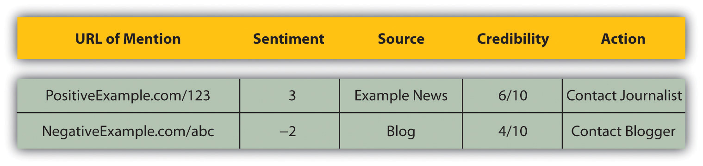

If Dell were really smart, they’d hire me (yes, me) to come to them and teach them about blogs, about how their customers now have a voice; about how their customers are a community—a community often in revolt; about how they could find out what their customers really think; about how they could fix their customers’ problems before they become revolts; about how they could become a better company with the help of their customers.
If they’d only listen.
Jeff Jarvis on his blog, Buzzmachine.com, in 2005
Online conversationsA bidirectional discussion between either individuals or a brand and its stakeholders in an online environment such as social media. are taking place all the time: about politics, about Britney Spears, about a pet dog, about nearly anything. People everywhere are engaging in and creating blogs, videos, mashups, and more. It’s called consumer-generated media (CGM)Another term for social media—the media that are published, created, and shared by individuals on the Internet, such as blogs, images, and video., and it’s big news for any company or personality today.
We’ve learned about the tools of social media and the importance of word of mouth when it comes to viral marketing. Consumers trust each other, and search engines find that trust very relevant. Increasingly, CGM is showing up in the top results of the search engine results pages (SERPs)What is seen on a search engine when a search is performed..
The use of social media has equipped consumers with a voice, a platform, and the ability to amplify their views. The connected nature of the Internet makes these views easy to share, and the accessibility of social media tools makes it easy for other consumers to respond. Whether positive, negative, or just slightly off center, consumers are making their views known and brands are taking heed.
Added to this is the rising prevalence of CGM in search results, particularly with the recent integration of Twitter into search results and Google’s Social Search. Entries that companies have no control over are ranking highly in brand search results. A Google search on “brand name + complaints” will display a whole lot more CGM.
A company’s reputation can make a difference to its bottom line. Companies that listen to and engage with their customers and appear honest and transparent can benefit from a growing fan base of loyal customers who can then turn into passionate spokespeople. Companies who ignore the voices of their customers will see diminishing loyalty and a growing resentment among the vocal online consumers. So much so that the recent King III report on corporate governance requires that stakeholder reputation is managed in order for compliance.“King III Report,” PricewaterhouseCoopers, 2009, http://www.pwc.com/za/en/king3/index.jhtml (accessed June 23, 2010).
Research by Edelman in 2008 found that 54 percent of individuals trusted fellow consumers ahead of any other source; similarly, Nielsen’s “Trust in Advertising” found that 78 percent of people trust the recommendations of others.“Edelman Trust Barometer 2008,” Edelman, 2008, http://www.edelman.com/TRUST/2008/TrustBarometer08_FINAL.pdf (accessed June 22, 2010); “Trust in Advertising: A Global Nielsen Consumer Report,” Nielsen, October 2007, http://asiapacific.acnielsen.com/site/documents/TrustinAdvertisingOct07.pdf (accessed June 22, 2010). Companies and individuals need to listen to what is being said about them and learn how to respond to and engage with their consumers in this world of shifting power.
Figure 11.1

A search for “Macbook” shows that there are many entries on the SERP (search engine results page) that Apple does not control.
Focus groups are not required for gauging customer sentiment on the Internet. It’s all out there, connected via hyperlinks and crawled regularly by search engine spiders.
KeywordsIn online reputation management, a term that is used when searching the Internet for mentions.—the foundation of categorizing and indexing the Web—make it relatively simple (though possibly time consuming) to listen to the chatter online. Customers are not using channels designated by a company to talk about that organization, but the good news is that the Internet makes it easy for a company to use the channels that customers have selected.
Online reputation management (ORM)Understanding and influencing the perception of an entity online. allows a company to track mentionsIn online reputation management, the instances when a selected brand, company, or staff members are talked about online, usually by clients or consumers. of itself, its staff, its products, its industry, and its competitors. In fact, the tools allow for the tracking of anything; it just comes down to deciding what is relevant to you.
In terms of the company, one can track the following:
In terms of the industry, one can track the following:
In terms of competitors, one can track the following:
For example, if Apple were to use these tools to monitor its reputation, some keywords used for the company might be the following:
For its industry, Apple might use the following:
For its competitors, Apple might use the following:
It is also important to track common misspellings, all related companies, and all related Web sites.
Tracking the names of people key to a company can highlight potential brand attacks or can demonstrate new areas of outreach for a company.
Brand names, employee names, product names, and even competitor names are not unique. To avoid monitoring too much, identify keywords that will indicate that a post has nothing to do with your company and negative match that keyword in your searches.
For example, “apple” could refer to a consumer electronics company, or it could appear in a post about the health benefits of fruit. Finding keywords that will indicate context can help save time. So you could negative match words like “fruit,” “tasty,” and “Granny Smith.”
Thankfully, ORM does not entail hourly searches on your favorite search engine to see what is appearing on the search engine results page (SERPs), although being aware of your search space is vital as well. There are a number of search engines that allow users to narrow a search to particular media or industries, and using RSSAbbreviates all the content most Web sites on the World Wide Web contain in order to provide you with specific content you want. RSS allows you to receive and syndicate this information without requiring you to constantly open new pages in your browser. Also see feed reader. (really simple syndication) means that these results can be updated regularly and kept conveniently in one place.
Remember RSS from Chapter 8 "Social Media"? It means that you can keep track of everything in one central place.
Monitoring all mentions means that the following need to be tracked:
There are a number of different tools that monitor these areas and supply the results via e-mail alerts or RSS feeds. The following are some free tools that are available.
Google has several search services, some of which have been mentioned previously, and periodically adds more to the list. With the services below, an RSS feed is available for the search (Google Alerts sends weekly or daily e-mails with updates), so that all updates can be available through a feed readerAn RSS aggregator that lets you view all your RSS feeds in one place..
There are several search engines that focus solely on tracking blogs, news, and other social media and can provide trends for searches. As well as providing regular updates of new postings, these search engines can provide an overview of a certain period of time.
Keeping track of blog posts is one thing, but mentions of a company can also appear in blog comments and on forum postings. The following two services assist in monitoring comments and forums.
Yahoo! has a number of social media companies under its umbrella, and most provide the opportunity to monitor mentions via RSS.
There might be Web sites that a company would like to monitor for keyword mentions that do not offer RSS feeds. Using a service such as Rollyo (http://www.rollyo.com) allows the creation of a custom search engine that will search those specific sites only.
Listening is the first step to getting involved in the conversation surrounding a company. Using search tools and RSS feeds means that information can be accessed quickly and in one place without the need to visit hundreds of Web sites.
As a marketer, the first step in looking at who is saying what is to take stock of the messages being sent by your own company. This includes all Web sites and domains owned by a company, all blogs maintained by employees (whether company blogs or personal blogs), and all blogs maintained by former employees. An audit should give an idea of the content that is available to the public and what that content is saying.
With regular RSS updates declaring that selected keywords have been used in some form of social media, a growing list is being created of mentions surrounding a brand. Now what?
Even in the democratized world of the Internet, not all mentions are equal. They vary in terms of positivity or negativity and influence. Not all mentions require action from a company, but some require drastic measures to be taken. But all, no matter how quiet or how loud, are an indication of consumer sentiment.
Whether a post is positive, negative, or indifferent can be quickly assessed by reading it. Influence can be a little harder to establish.
Indicators such as traffic, links, and subscriber numbers can all assist in assessing the influence of a blog. There are also services such as Social Meter (http://www.socialmeter.com) that will show an entered URL’s audience and reach.
However, statements, particularly inflammatory ones, should still be monitored, as traffic can increase substantially and quickly online.
Influence can also assist in establishing the credibility of the author. Factors that can indicate credibility include the size of the blog’s audience, the frequency of posts, and the age of the blog. From this, metrics such as credibility, sentiment, and media distribution can be extrapolated. Furthermore, metrics such as reputation scores and volume of conversation provide insight into the health of a brand and the success of marketing and communication campaigns.
The source should also be looked at: is the mention a news item or a tag on a photo from someone’s holiday? The first would be a credible source, but the second would not be high in credibility.
To be able to monitor reputation over time, it can be a good idea to aggregate the information into a spreadsheet or database along with the factors mentioned previously. It is necessary to determine what is important to the reputation of the company you are monitoring and perhaps adapt factors accordingly.
Your database might look something like this:
Figure 11.2
There are also a number of paid-for services on the market that will assist in monitoring and aggregating this information.
BrandsEyeOnline reputation management (ORM) software, developed by Quirk eMarketing, that allows for real-time monitoring of a brand on the Web. BrandsEye combines human subjectivity with sophisticated technology, allowing the quantifying and benchmarking of online reputation. (http://www.brandseye.com) is a tool launched in 2008 that does just that. Not only does it track mentions, but it also allows the user to assign sentiment and importance to mentions and provides a benchmark of a brand’s reputation. Trackur (http://www.trackur.com) is another tool that monitors the volume of mentions but provides limited analysis.
The best way to show that you are listening is by engaging. Online, there are many channels available to companies to respond to the conversation and to become an active participant in it.
What if everything being said is nice?
A fantastic position to be in is that every possible mention that includes your company, its employees, and products is overwhelmingly positive. Well done. However, that does not mean that there is nothing to do. Consumers want to know that a company is listening; it needs to respond. Positive comments should be acknowledged.
All of these mentions can also indicate new avenues for marketing and growth.
If everything being said is neutral, then it sounds like the company is very boring. As Seth Godin puts it, “safe is risky.”Seth Godin, “Safe Is Risky,” Seth Godin’s Blog, October 22, 2004, http://sethgodin.typepad.com/seths_blog/2004/10/safe_is_risky.html (accessed June 20, 2010). If a company is playing it so safe that no one can be bothered to either send praise or criticism its way, it’s in danger of being forgotten. The next step is no one talking about the company at all.
Negative statements should be seen as an opportunity for growth. Negative statements can be complaints or criticisms, and both should be dealt with.
Complaints are from stakeholders who have had dealings with a company. By complaining, a customer is giving the company the opportunity to make things right and is probably indicating where the company can improve. Usually, the skilled customer service department of a company should deal with complaints.
If a complaint is online, the resolution should be there as well, although you can try to have it taken offline first. Even though the customer service will likely take place either over e-mail or by phone, posting a comment in a blog post, for example, will show the community that the company both listens and responds.
Criticism need not necessarily come from customers, but it is important to be aware of it. If a criticism includes false information, it should be corrected. And if the criticism is true, then it should be dealt with as such.
Responding involves recognizing that consumers dictate the channels of communication and that a company needs to go to the consumer, not the other way around.
In South Africa, “vodacom3G” is the name of a Vodacom representative who monitors the forum http://mybroadband.co.za and resolves complaints and queries and offers assistance. Instead of directing customers to an FAQ (frequently asked question) section on a Vodacom site, Vodacom has followed their consumers to the channel that the consumers prefer.
Visit http://www.mybroadband.co.za to see how Vodacom is using the forum to interact with customers.
Not only does Vodacom resolve questions on the forum, but the company also uses it to provide key information that consumers want. If you are responding to a blog post, find the writer’s contact details on the blog and e-mail her directly. As a last resort, use the comments to make contact with the blogger.
When responding, be transparent and honest. Remember that e-mails can be reproduced on blogs. At all times, remember that you are engaged in conversation, not dictation.
In Chapter 8 "Social Media" and Chapter 13 "Web Site Development and Design", there are guidelines for companies to lead the conversation using the tools of social media and Web public relations (WebPR). Influencing and leading the conversation can also have the consequence of there being more results that are led by your company in the SERPs.
Companies can also be proactive by purchasing negative name domains, such as http:// www.companynamesucks.com, to prevent angry customers from buying them and having them hit the SERPs.
Lastly, take a look at negative brand-name searches on major search engines and consider PPC (pay-per-click) advertising to offer the company’s point of view.
Online reputation management (ORM) should not simply be seen as a tool in the measurement and engagement arsenal. It provides a great deal more insight that can be applied to many other elements of the business to maximize results.
Within the marketing realm, ORM provides key insights into how particular tactics are performing and how it impacts the overall marketing strategy. By measuring how your stakeholders respond to particular activities (be it marketing, communications, or branding) it becomes possible to learn through each campaign and mold the tactic based on empirical data to maximize returns. This provides a great way for both offline and online campaigns to constantly improve and stay relevant to stakeholders’ needs.
These same outputs can also be shared with other departments, such as human resources (HR), to provide additional ways to impact the internal workings of your company. In HR’s case, a measure might be of how staff view the company itself.
Similarly, these insights can be applied to the overall business strategy to assist both with data collection and providing early insights on competitor and environmental changes that may drive strategic decision making. The Internet is the largest focus group, and if it’s looked at from a market research perspective, there is a huge opportunity to apply “wisdom of the crowd” and evolve business to be more aligned with your stakeholders’ needs.
These ten rules to recovery should provide a practical approach for brands facing an online threat.
Before you can recover from an online brand attack, you have to be aware that your brand can be attacked, no matter how big it is or how untouchable it may seem.
Once you have a clear understanding of the scope of the possible effects of an online attack and are committed to maintaining a good reputation online, you’re halfway there. Next you’ve got to understand how the process of consumer complaints has evolved. Use this understanding to guide your actions.
One of the easiest ways to solve the majority of brand attacks is to respond quickly. A brand that shows it is listening and does indeed care will go far when it comes to ensuring a solid online reputation. A conscious reaction is the only way forward—that is, acknowledging what has been said and reacting accordingly.
If the mention of your brand is factually incorrect, in a friendly tone, send the blogger (90 percent of the time it will be a blogger) evidence that they are wrong, ask for removal or retraction of the entry, and offer to keep them informed of future news. If no action is taken by the blog author, then add a comment.
If it is true, learn from the “Dell Hell” phenomenon, a term coined from the situation in which a blogger wrote about his bad experience with computer maker Dell. Dell failed to respond, and the negative word spread—resulting in insurmountable damage for the company. If the mention is negative but true, then tell your side of the story and try as hard as you can to take it offline.
On January 22, 2009, a story was published on CNN’s iReport claiming that Steve Jobs had had a heart attack. While it was later found out to be a hoax, it had an immediate effect on Apple’s stock price, dropping it by 6.6 percent, amounting to a $5.62 billion loss in market capital.
Keeping more people from reading negative things about your brand is imperative. What you can do is knock them off the first page of the results with basic SEO topped with some social media page setups such as Squidoo and MySpace or forum posts. Keep adding pages and links until you’ve forced the offending pages out of sight. This tactic doesn’t lack transparency but rather gives consumers the opportunity to view positive mentions of your brand before they come across the negative ones. All brands have negative conversation surrounding them in some form or another.
If you aren’t an active member of the online community, it will be a little harder to recover from an online attack. If your company doesn’t have a blog, start one. Participate in industry forums and chat rooms. Build genuine credibility as a member of these conversations, and you’ll find that people will have more respect for you and your brand.
Keep your brand in the face of consumers by engaging in the conversation. This could be done by making use of blogs, communicating with customers, and being as open and honest as possible. Engaging in, and leading, the conversation allows you to build an authentic voice. If a crisis hits, you will be well placed to respond in a way that is authentic.
If you truly care what your customers think, then most of this will come naturally. That’s all people want. They give you their money; they just want some good service and respect in return.
No brand is immune to an online brand attack. The best brands have strategies in place to immediately identify a reputation crisis and respond to it quickly enough to stop the negative word of mouth from spreading.
If all else fails, apologize and move on.
Bottom line, by making bloggers familiar with your voice, you will be better placed to respond to criticism. Consumers can spot last-minute corporate firefighting—they should know and trust your voice already.
Using a tool to measure one company’s reputation will give an indication of consumer sentiment, but it is far better to be able to compare that to competitors’ reputations. Using the online reputation management (ORM) monitoring and analyzing tool BrandsEye, the online reputation of four prominent South African banks was measured for the period November 26, 2006, to February 13, 2007.
Banks, and particularly their customer service, generate a lot of conversation, both online and off. BrandsEye was used to monitor mentions of the banks, to filter out duplicate mentions, and to generate a daily reputation score for each bank that could then be measured over time.
Figure 11.3 Graph Showing the Differences in Reputation of Four South African Banks

Changes in reputation, especially jumps such as the one experienced by Bank 4 just after December 26, can then be correlated to real-world events.
Bank 1 has superior customer service levels, and this is shown in the reputation score. However, toward the end of January, Bank 1 experienced a backlash from local government when attempting to launch a public-service campaign. The offline media coverage was far reaching, loud, and venomous, and within a short while the effects on the bank’s reputation were expected to be seen online. On the contrary, what actually happened was quite surprising. While the ORM tool picked up a number of negative mentions, these were in fact directed at local government for seemingly coercing the bank into withdrawing their campaign.
With a temporary dip in reputation score, the result was that throughout February, Bank 1’s online reputation grew stronger and stronger. Having their hand forced created a sense of public empathy, with the majority of criticism deflected away from the bank itself. Furthermore, when critics of the bank’s withdrawal voiced their opinions, a number of respondents actually jumped to its defense. With an already high online reputation score, not only did Bank 1 survive what could have potentially been a major crisis, but its reputation thrived as a result.
Bank 2, on the other hand, had the lowest reputation score throughout the investigation, although tending to the positive toward the end of the test period. Their poor customer service levels, as perceived by their online customers, were negatively affecting their online reputation.
In fact, one of South Africa’s most prolific online forums had an established tradition of using Bank 2 as an example of what was wrong with the industry in general. A comment by one forum member went, “Bank 2 is evil! Evil! Evil! Evil!” The majority of Bank 2’s negative mentions originated from this particular forum, and interestingly, where it was criticized, Bank 1 was offered as a suitable alternative.
Andy Beal, “Social Media Monitoring Tools: 26 Free Online Reputation Tools,” Marketing Pilgrim, August 27, 2007, http://www.marketingpilgrim.com/2007/08/26-free-tools-for-buzz-monitoring.html (accessed March 3, 2008).
Pete Blackshaw, “Search and Reputation: Your Brand Standing Is Your Shelf Landing,” ClickZ, January 22, 2008, http://www.clickz.com/showPage.html?page=3628171 (accessed March 3, 2008).
Thomas Hoffman, “Online Reputation Management Is Hot—But Is It Ethical?” Computerworld, February 12, 2008, http://www.computerworld.com/action/article.do?command=viewArticleBasic&articleId=9060960 (accessed March 3, 2008).
Jeff Jarvis, “Dell Hell,” BuzzMachine, July 1, 2005, http://www.buzzmachine.com/archives/cat_dell.html (accessed March 3, 2008).
Jeff Jarvis, “My Dell Hell,” The Guardian, August 29, 2005, http://www.guardian.co.uk/technology/2005/aug/29/mondaymediasection.blogging (accessed March 3, 2008).
Susan Kinzie and Ellen Nakashima, “Calling In Pros to Refine Your Google Image,” Washington Post, July 2, 2007, http://www.washingtonpost.com/wp-dyn/content/article/2007/07/01/AR2007070101355 .html?hpid=artslot (accessed March 3, 2008).
“Online Reputation Management,” Elixir Systems, 2006, http://www.sempo.org/learning_center/articles/ElixirSystemsOnlineRepMgmt.pdf (accessed March 3, 2008).